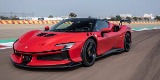
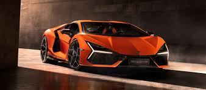
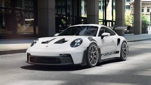

Los 5 Carros Deportivos Más Impresionantes del 2025
Si eres un amante de la velocidad y la adrenalina, el 2025 promete ser un año emocionante para los carros deportivos. Desde innovaciones tecnológicas hasta diseños aerodinámicos impresionantes, estos son los cinco modelos que están robando miradas en la industria automotriz.
1. Ferrari SF90 XX Stradale
Ferrari lleva la electrificación a un nuevo nivel con el SF90 XX Stradale. Con 1,030 caballos de fuerza combinados entre su motor V8 biturbo y su sistema híbrido, este superdeportivo ofrece una aceleración de 0 a 100 km/h en menos de 2.3 segundos.
2. Lamborghini Revuelto
El sucesor del Aventador, el Lamborghini Revuelto, es un híbrido enchufable que mantiene la esencia de la marca italiana. Con un motor V12 combinado con tres motores eléctricos, alcanza los 1,001 caballos de fuerza y una velocidad máxima de 350 km/h.
3. Porsche 911 GT3 RS
El Porsche 911 GT3 RS sigue redefiniendo lo que un auto deportivo puede hacer en pista. Su motor atmosférico de 4.0 litros entrega 518 caballos de fuerza y un chasis optimizado para el rendimiento aerodinámico, convirtiéndolo en uno de los favoritos para los entusiastas de la conducción pura.
4. McLaren Artura
McLaren entra con fuerza en la era híbrida con el Artura, un superdeportivo ligero con un V6 biturbo y un motor eléctrico que combinados generan 671 caballos de fuerza. Su estructura de fibra de carbono lo hace extremadamente ágil y eficiente en carretera y pista.
.jpg)
5. Bugatti Mistral
Este impresionante roadster marca el fin de una era para Bugatti al despedirse de su icónico motor W16. Con 1,600 caballos de fuerza y una producción limitada, el Mistral es una obra de arte sobre ruedas.
.jpg)